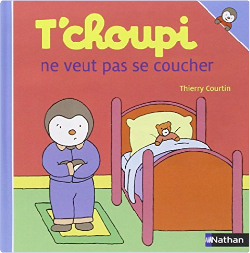

 T'choupi, tome 39 : ne veut pas se coucherThierry Courtin  Tchoupi, l\ ami des petits Chaque titre aborde une situation de la vie quotidienne de T\ choupi : ses grands bonheurs, ses petits soucis. Tchoupi a peur des... T'choupi, tome 41 : fait des bêtisesThierry Courtin T\ choupi, l\ ami des petits ! Aujourd\ hui T\ choupi ne fait que des bêtises : il tire au ballon dans les fleurs de maman, maquille sa petite sœur avec des feutres et d... T'choupi, tome 42 : part en vacancesThierry Courtin NEUF JAMAIS OUVERT.EXP RAPIDE ET SOIGNEE.. Avertissement par e-mail de l'envoi du colis |

Julien
Collection Total:
2 100 Items
2 100 Items
Last Updated:
Feb 15, 2025
Feb 15, 2025


 Made with Delicious Library
Made with Delicious Library